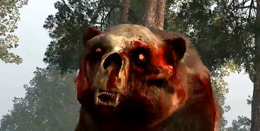

So reality has finally set in and you've come to terms that the zombie apocalypse is really happening. You've also decided to GTFO of Dodge. You never were a city person anyway, were you? Alright, so what can you expect on your "life long nature hike?" Well, just because you choose to live like Clifton T Clowers, doesn't mean you're "out of the woods."
What better time to go back-packing around the country than during a world wide catastrophe? As always when traveling, try to pack light and effective. Since you plan to be on the move for the most part, you should keep your focus on tools. Items to trap, clean and cook "food" when you cant find a Quickie Mart to loot. A very good first aid kit. Multi-purpose tools are a nice find. Things like survival knives with a compass embedded in the handle. Leather-mans, a multi-use military type shovel or the tool with the most uses in the world...Duct tape. If you happen to catch a whisper on someones old ham radio about an impenetrable fortress for survivors, then you may want have a map handy also. Some things you'll probably come across quite often. After all 99% of all houses and buildings will be void of anyone who gives a flip, so help yourself and restock on your essentials every time you get the chance. And remember, just because its the end of the world doesn't mean you give up on hygiene either, you don't want your only pair of soiled draws to be the reason Yogi Bear Boo-Boo Face is giving you a wake up call.

"Thats a mighty fine picnic basket you got there."